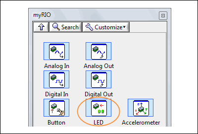
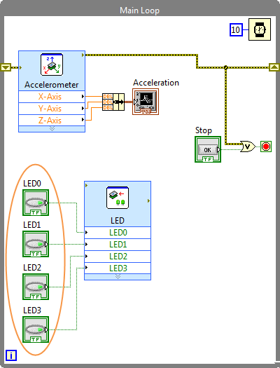
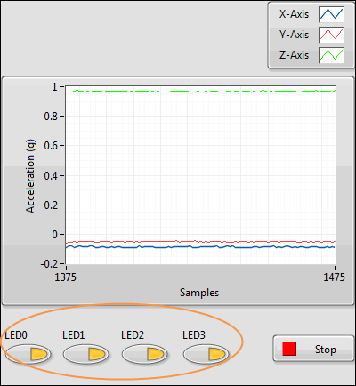
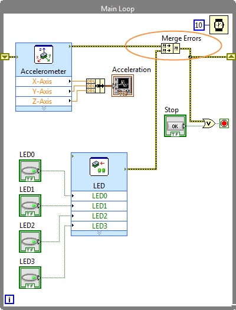

Part 3: Controlling the LEDs
Remember how you toggled buttons in the Getting Started with myRIO wizard to change the myRIO onboard LED states? This part of the tutorial teaches you how to create an application to control the onboard LEDs. Before starting this part, make sure you have completed the previous parts of the tutorial.
 |
|
 |
|
 |
|
Congratulations! You have successfully programmed to control the onboard LEDs.
Before you proceed to the next part, let's talk about error checking in LabVIEW. Error checking is important because it identifies why and where errors occur in your VI.
The current Main VI checks errors in the Accelerometer Express VI. If the Accelerometer Express VI returns an error, the Main VI stops. To ensure that the Main VI also stops when the LED Express VI returns an error, you must add code to check errors in the LED Express VI. Use the Merge Errors function to merge errors from the Accelerometer and LED Express VIs. You can access the Merge Errors function by navigating to Functions»Programming»Dialog & User Interface»Merge Errors.
The following figure shows the block diagram after you add the Merge Errors function. The Main VI stops if the Accelerometer Express VI or the LED Express VI returns an error.

Now, proceed to control the onboard user button.
 Previous
Previous